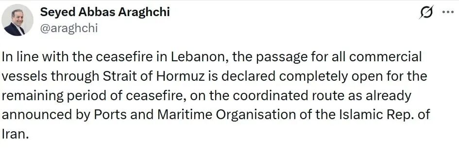
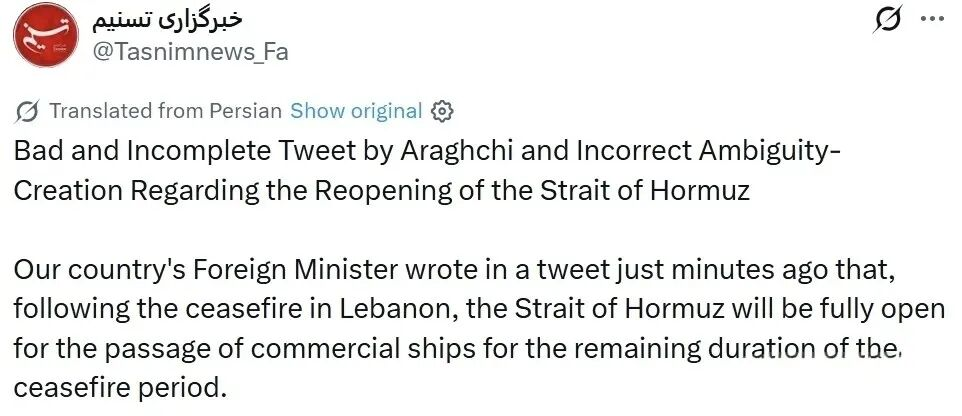
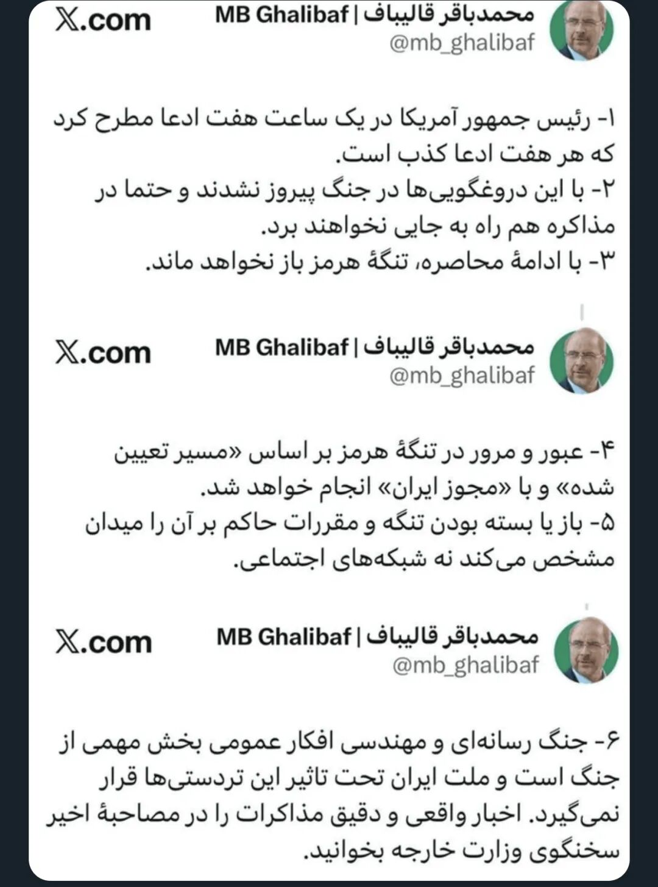

昨晚，伊朗外交部长阿拉格齐的一篇推文引发了全球“误解”：

尽管他讲的是，“在剩余停战期内”，遵循伊朗的“协调路线”，但由于出现了“所有商业船只通过霍尔木兹海峡的通道将完全开放”这一说法，使得川普找到机会疯狂输出，又画了一个很大的K线图。

Tasnim连发数贴，重申海峡并未完全开放，IRGC实施全面监督，并且明确指出“外交部必须重新考虑这种沟通方式”。
这是开战以来，伊朗内部第一次出现如此大的分歧。很显然，阿拉格齐的推文并未真实反映伊朗内部对海峡的态度，或者说，在海峡问题上，伊朗外交部说了不算，真正拥有发言权的是IRGC。阿拉格齐轻率的发言给了川普又一个表演的机会。
在昨晚Tasnim尚未表态的时候，作者就讲，如果谈判对伊朗不利，“IRGC是不会干的，到时伊朗就不是一个整体了，IRGC会体现自己的独立性。反过来。为了压住IRGC，伊朗领导层在核心利益上不可能松口。”（《美伊双方都表达了停战的诚意》），很快就应验了。
川普的每句话都不可信，霍尔木兹海峡的控制权在伊朗而不是美国，很多人就是理解不了这点。
Tasnim昨晚公开了这个短暂停战期间海峡通行的规则，有三条：
1. 船只必须是商业性质的，禁止军事船只通行，且船只和货物均不得与敌对国家相关。
2. 船只必须通过伊朗指定的航线。
3. 船只通行必须与负责通行的伊朗部队协调；正如中央司令部（CENTCOM）在战前所确认的，伊斯兰革命卫队（IRGC）对霍尔木兹海峡拥有管理权。
这次的允许通行，更像是在减轻海峡内侧大量滞留商船的压力，这些船只属于很多国家，一直滞留海峡内侧，补给严重不足，如果再待下去，可能会引发这些国家对伊朗的不满。这跟“海峡恢复通行”还差得很远。同时，这个暂时恢复通行，也与黎巴嫩停火挂钩。如果以色列恢复对真主党的进攻，那通行就结束了。
Fars News也报道了伊朗国防部副部长尼克的讲话：“霍尔木兹海峡仅在停火状态下以有限方式开放，条件是敌对国家和相关军事船只无权通过霍尔木兹海峡。”
伊朗谈判首席代表，议长卡利巴夫也连发数条推文，表示“美国总统在一小时内提出了一个主张，而这个主张每小时都在被证伪”，“尽管这场战争每天都在持续，且谈判也在进行中，但美国在这些谎言中仍试图为自己寻找出路”，也重申了海峡开放的原则是获得伊朗许可。
